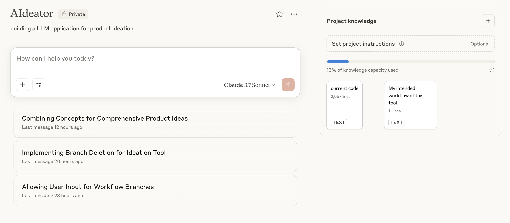
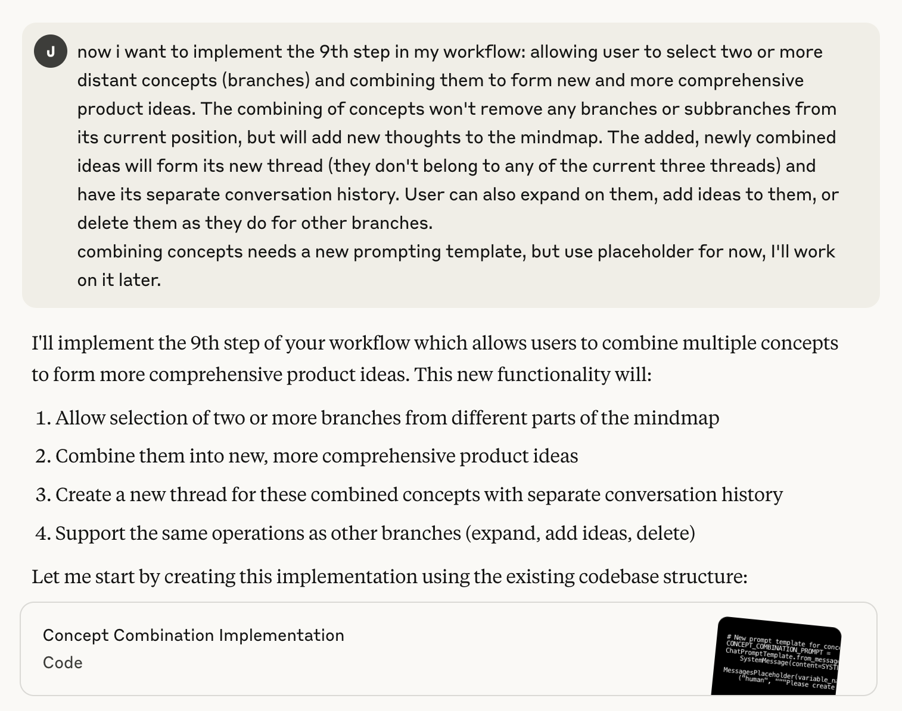

The capabilities of Cursor and Claude
This post shares my personal experience using an AI coding tool for the first time to develop a web application on my own.
For context, I don’t have much experience writing code, nor do I have an extensive background in software development. My understanding is limited to basic coding concepts like variables, functions, and arguments. Learning everything from scratch and building a full web application on my own would have been time-consuming and overwhelming—but thanks to AI coding tools like Claude and Cursor, I was able to successfully build the backend (primarily using LangGraph) for my LLM application AIdeator.
The workflow is built using LangGraph’s framework, leveraging OpenAI’s API to help users generate mind maps for product ideation. During the collaborative session, humans and the AI take turns expanding on existing concepts, gradually shaping innovative product ideas through mutation and recombination of different elements.
The backend is relatively lightweight—it doesn’t involve data storage or additional API integrations. Instead, it primarily relies on the Large Language Model for generating outputs and facilitating the ideation process.
Strengths and weaknesses of Cursor and Claude
TL;DR: I rely on Claude for about 95% of my code writing thanks to its accuracy and thorough explanations. Meanwhile, Cursor serves as my main coding platform—housing my repo and handling simpler commands and quick tasks more fluidly due to its integrated IDE environment.
Cursor: Strengths
- IDE-Like Experience: Cursor is tightly integrated into a code editor. This provides real-time feedback, inline suggestions, and a relatively seamless workflow for writing and refactoring code.
- Fast, Integrated Workflow: Because everything happens directly in the IDE, there’s no need for copy/paste. It’s a sleek process that keeps you in the coding flow.
- Context-Awareness: Because it’s typically embedded in your editor, it can see your file structure and code context, making suggestions that are often relevant to your specific project.
- Good with Simple Tasks: Cursor shines when it comes to straightforward function development and logistical coding actions—it’s quick and effective at these.
- Smart Auto-Fill: The tab-completion feature can be surprisingly accurate and significantly reduce typing time.
Cursor: Weaknesses * Complexity Issues: As functions get more complicated and new variables come into play, Cursor can slip up and introduce more errors. * Loss of Control: If you’re still learning the ropes, it can feel uneasy allowing direct edits to your original code. While you can reject changes, it can be a bit disconcerting. * Maintaining Consistency: If you make multiple rounds of edits to the same file, things can get muddled—especially if you accept some suggestions and reject others in quick succession.
Claude: Strengths
- Highly Accurate Code Suggestions: In most cases—around 90%—Claude’s recommendations are on point, resulting in overall higher-quality code.
- Clear Explanations: Claude doesn’t just toss out code; it also clarifies what it changed and why it matters. This is super helpful for learning and refining your approach.
- Strong Reasoning: Claude is known for clarity in explanations, so it can be great at discussing and walking through your code logic or summarizing how a snippet works. If you have doubts or questions, Claude evaluates the code critically, providing logical defenses of its suggestions without simply yielding to user prompts.
Claude: Weaknesses
- Lack of Native Editor Integration: While Claude can write or revise code, you often need to copy/paste between your editor and the Claude interface. This extra step can disrupt the coding flow.
- Context Window Constraints: The limited context window means you’ll often have to start a fresh conversation. Then you may need to re-summarize or re-introduce important details.
- Token/Output Limits: Long replies can get broken into multiple parts, risking a bit of inconsistency or minor mistakes during reassembly. It’s manageable, but not ideal.
My workflow in both tools
I started by developing a specific and highly detailed product document that outlined my intended workflow. This included the types of user input I wanted to collect, the steps users would go through, and the kind of output I aimed to generate. I uploaded this document to the knowledge base of my Claude project and initiated one conversation per feature, tackling each component of the larger workflow individually.

For each feature, I drilled down into the details—defining the content and format of both input and output, as well as mapping out the intended user actions. Claude then assisted me in writing the code to implement those goals. My role was to refine the prompting templates, which required more nuanced, human-level reasoning to ensure the AI would respond in the right tone and structure. Once I received the code, I carefully reviewed it to identify any unnecessary steps or unclear logic, and followed up in the chat to make adjustments.

After implementing each section, I ran several test cases to check if the output matched my expectations. Most features worked smoothly, but I occasionally ran into JSON parsing issues, usually caused by the LLM including additional explanations in its output. Fortunately, Claude was highly effective at identifying and fixing these problems when prompted.
In summary, I broke the project into manageable pieces, using Claude to handle the coding while I focused on prompt design, code review, and testing. This collaborative approach made it possible for me—despite having limited coding experience—to bring a complex backend workflow to life.
In the next post, I’ll be shifting my focus back to prompt engineering, as I still haven’t found the generated product ideas fully satisfying. I’ll be working on refining the prompting templates to create a higher-quality pool of concepts.